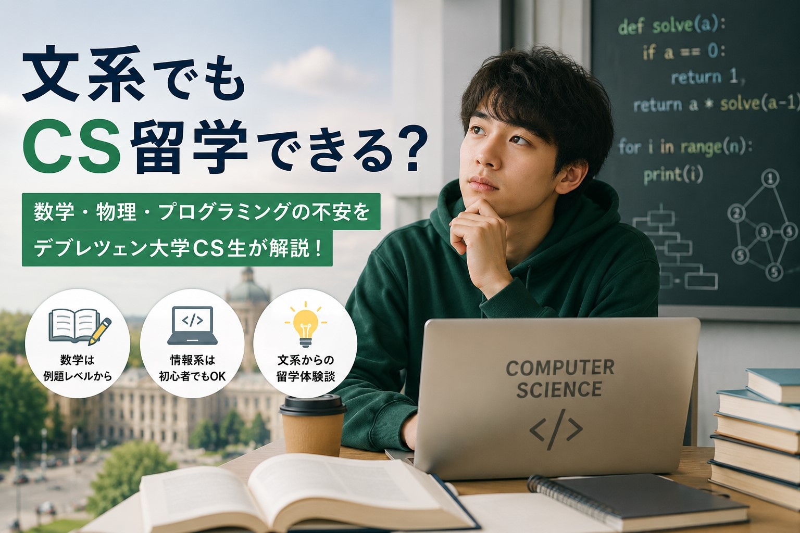
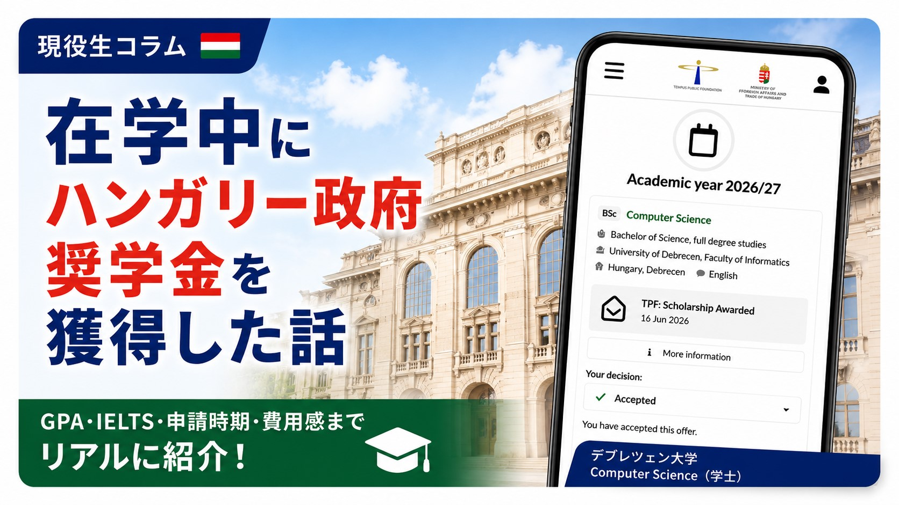
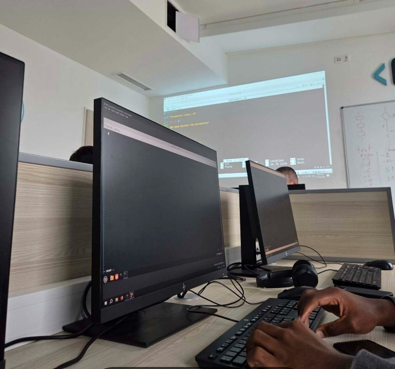
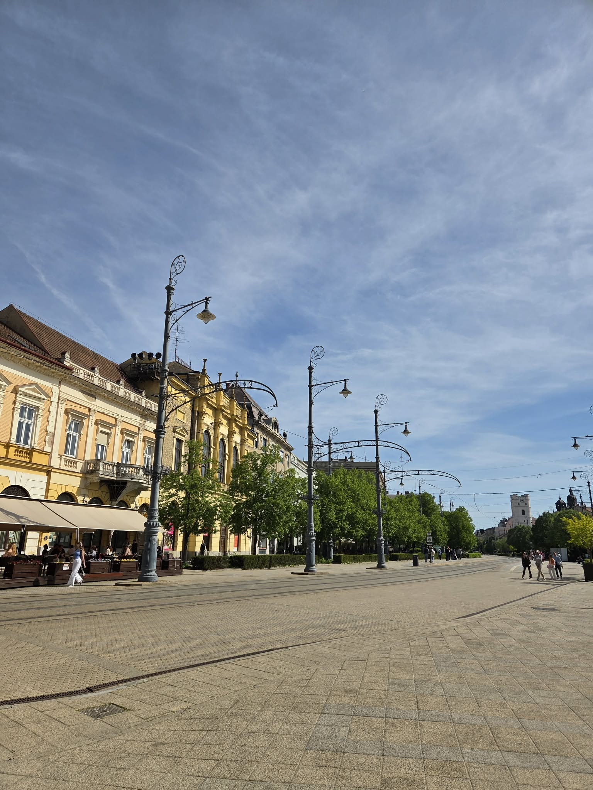
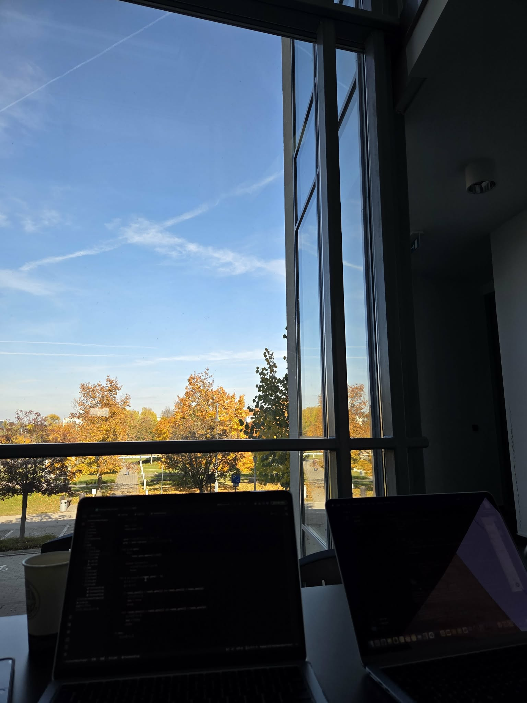
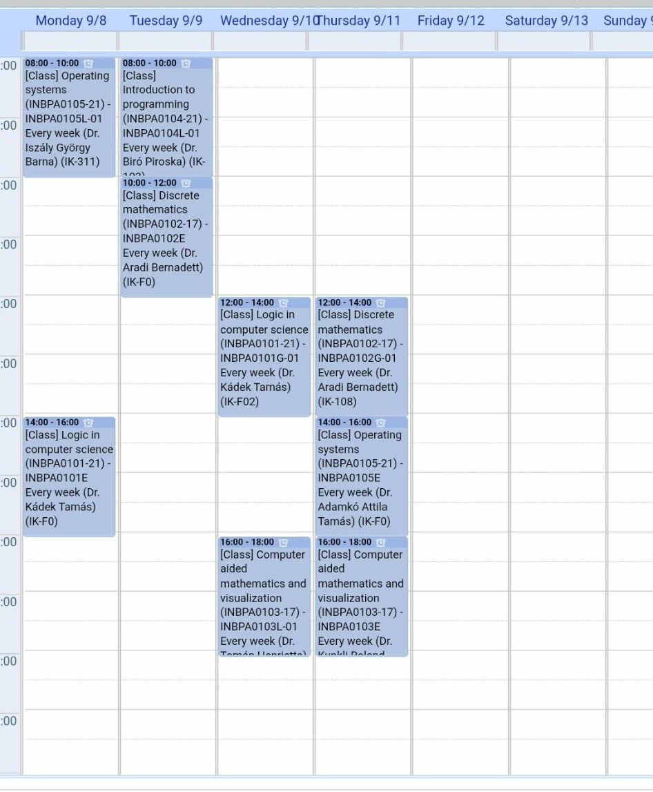
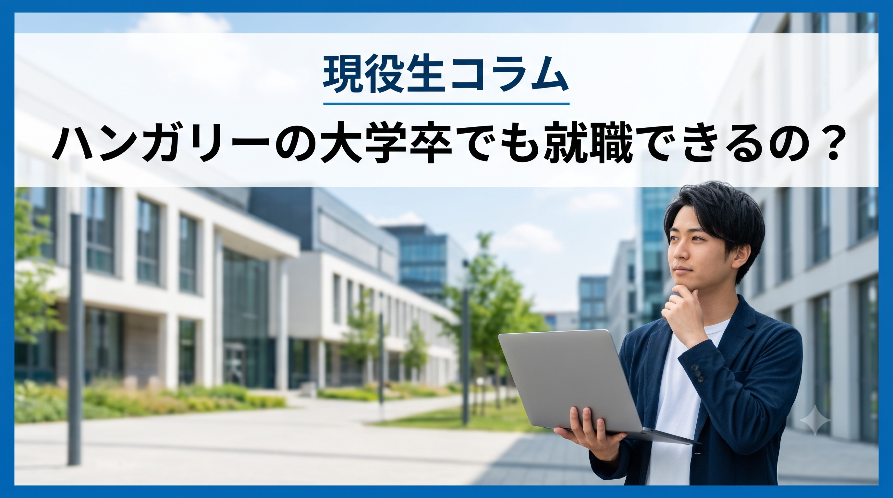
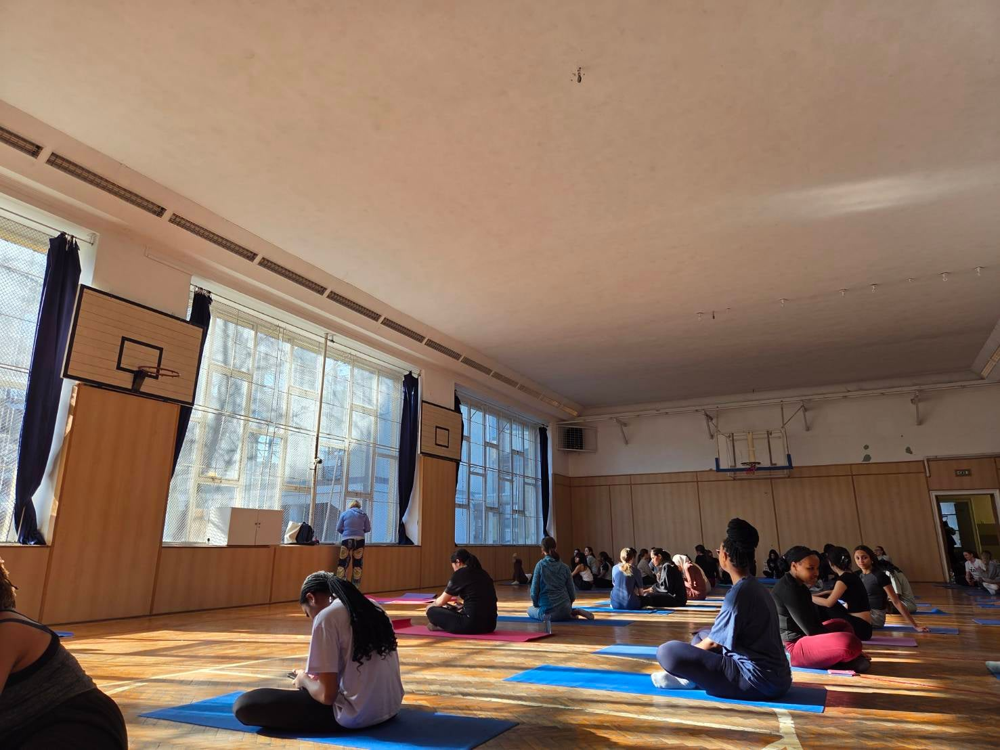
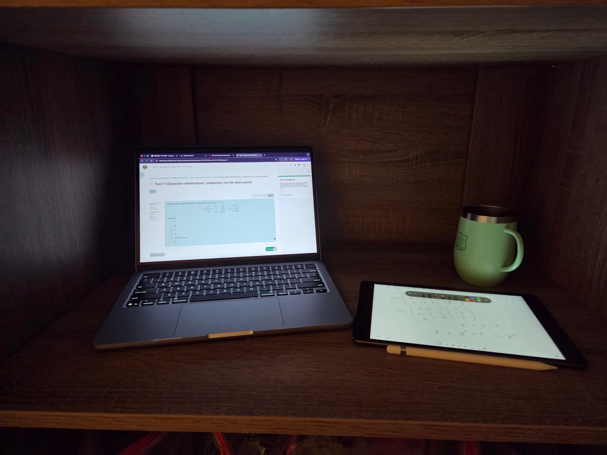
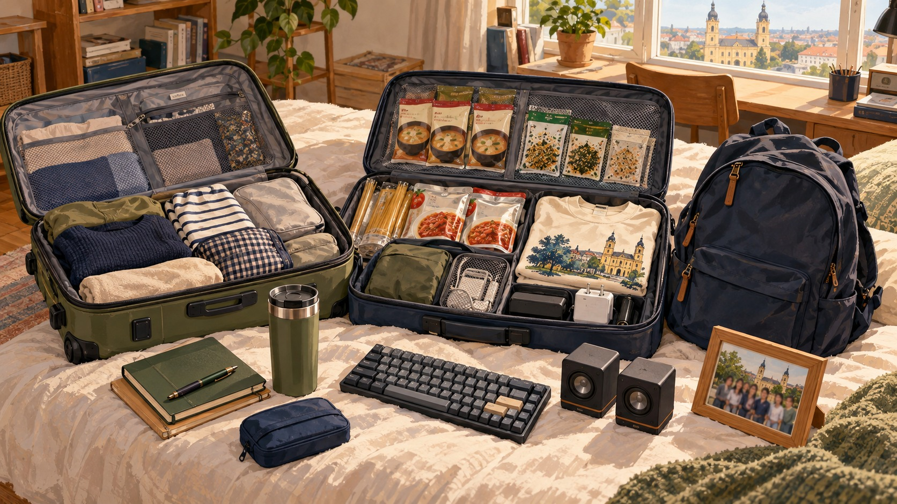

ユウゴUniversity of Debrecen2026.10.10
海外大CS学科は課題漬け？デブレツェン大学の日々の授業とプログラミング勉強法【CS専攻】
デブレツェン大学CS専攻の課題の実態と、プログラミング未経験からの勉強法、AI活用を現役生が紹介します。
Computer Scienceプログラミング大学生活
記事を読む
ハンガリー留学ラボ
ハンガリーの大学で学ぶ現役生が、授業・奨学金・現地生活について 毎月4本のコラムを更新しています。

デブレツェン大学CS専攻の課題の実態と、プログラミング未経験からの勉強法、AI活用を現役生が紹介します。
学期の有効化、履修登録、試験登録をBUEBの画面例で紹介します。
デブレツェン大学CS専攻のユウゴが、渡航前のアパート契約、譲れない部屋の条件、家賃の送金、安さだけで選んだ失敗談を実体験から紹介します。

35歳・修士2年のカネコが、一時帰国中のビジコン挑戦、イベントの裏方、英語学習と、ハンガリーに戻る前の正直な気持ちを振り返ります。

University of Debrecen在学中に、 スティペンディウム・ハンガリカムを獲得した体験談。 GPA、IELTS、申請時期、費用感までリアルに紹介します。

IELTS5.5でハンガリーへ進学したユウゴが、 大学・友達・買い物など、実際の英語事情をリアルに紹介します。

留学生活2学期でモチベーションが下がってしまった実体験と、 その乗り越え方について紹介します。

ハンガリー留学中に感じたホームシックの実体験と、 その乗り越え方について紹介します。
BUEB入学後、大学に寮がないことを知り、 約1か月間ホステル生活を送りながら部屋探しをした実体験。

Computer Science1年前期の時間割や授業内容、図書館での勉強、三連休の過ごし方まで、リアルな1週間を紹介します。
健康診断、家賃、残高証明、航空券など、 留学前に実際に必要だった費用を体験ベースで紹介します。
文系出身でもComputer Scienceへ進学できるのか。 数学・物理・プログラミングの難易度を実体験をもとに紹介します。

キャリアフォーラムやオンライン就活、 デブレツェン大学CS卒業生の進路について紹介します。
ハンガリーでの現金・カード決済、Wise、 海外送金や学費の支払いについて紹介します。

Computer Science1年後期の時間割や授業内容、昼食、体育、週末の過ごし方までリアルな1週間を紹介します。
製薬会社、軽井沢のホテル、英語塾での経験を経て、 34歳で観光学を学ぶことにした経緯を紹介します。
イギリスやドイツも検討する中で、費用、奨学金、BUEBの教育内容、ヨーロッパで学べる環境からハンガリーを選んだ理由を紹介します。

デブレツェン大学CS専攻の現役生が、 Final Exam、口頭試問、再試験制度、 テスト期間中の勉強法までリアルに紹介します。
デブレツェン大学CS専攻の現役生が、多国籍な同級生、 日本人コミュニティ、最初の友達ができたきっかけを紹介します。
デブレツェン大学CS専攻のユウゴが、1ヶ月の食費、自炊メニュー、Coop・Sparの使い分け、日本食が恋しい時の工夫を紹介します。

デブレツェン大学CS専攻のユウゴが、日本から持参して良かった食品・タンブラー・ガジェット、現地調達できたもの、重量管理などパッキングのコツを紹介します。
デブレツェン大学CS専攻のユウゴが、夏休み・冬休みの長さ、試験日程との関係、日本への一時帰国や航空券の費用について実体験を紹介します。